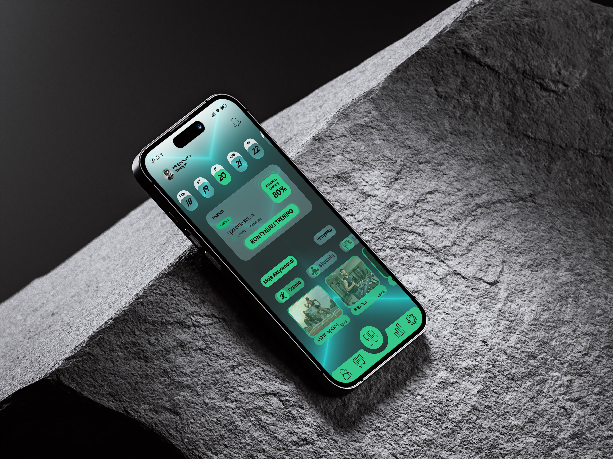
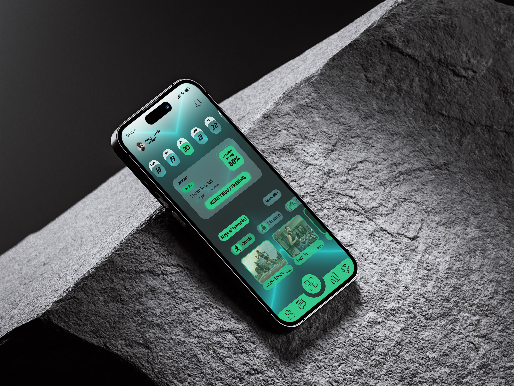
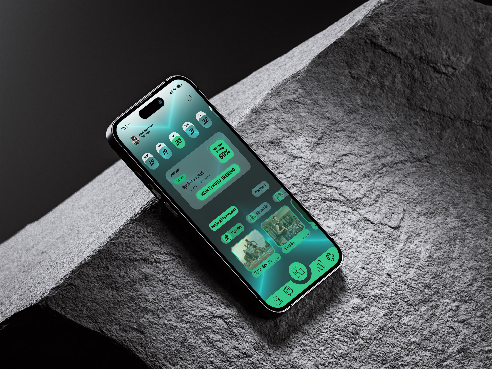

Portfolio


 


Tomasz Krasuski – grafik komputerowy
Dziękuje za odwiedzenie mojej strony, liczę że zostaniesz na dłużej.
Grafika to nie tylko moja praca – to moja największa pasja. Od lat rozwijam swoje umiejętności w projektowaniu wizualnym – od fotomanipulacji, obróbki zdjęć i brandingu po UI/UX i projekty do druku. Mam solidne doświadczenie i kreatywne podejście. Nie boję się żadnych wyzwań – zrealizuję każdy projekt graficzny, bez względu na jego złożoność. Przeniosę twoją wizję na ekran – wykonam projekt od koncepcji po gotowy plik nadający się do druku, opublikowania. Jeśli szukasz kogoś, kto zrobi Twój projekt profesjonalnie i z pełnym zaangażowaniem – skontakuj się
